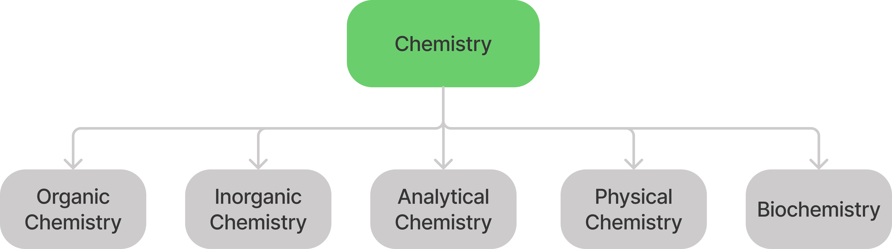
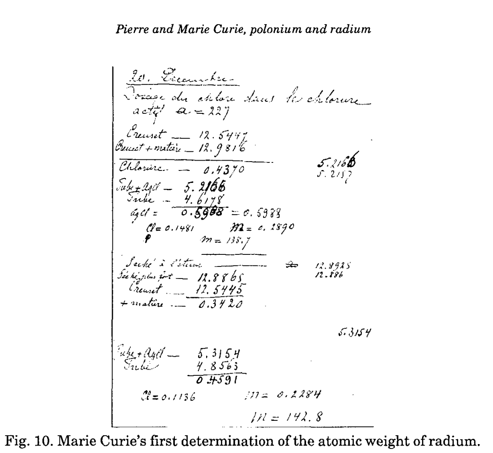
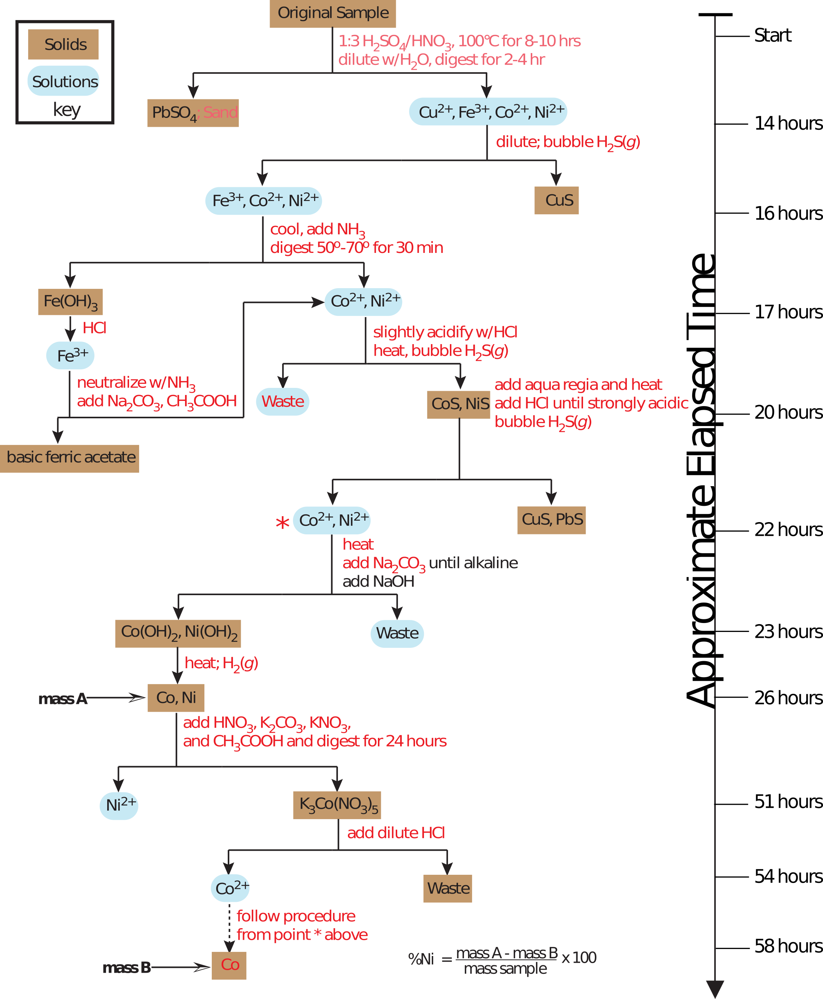
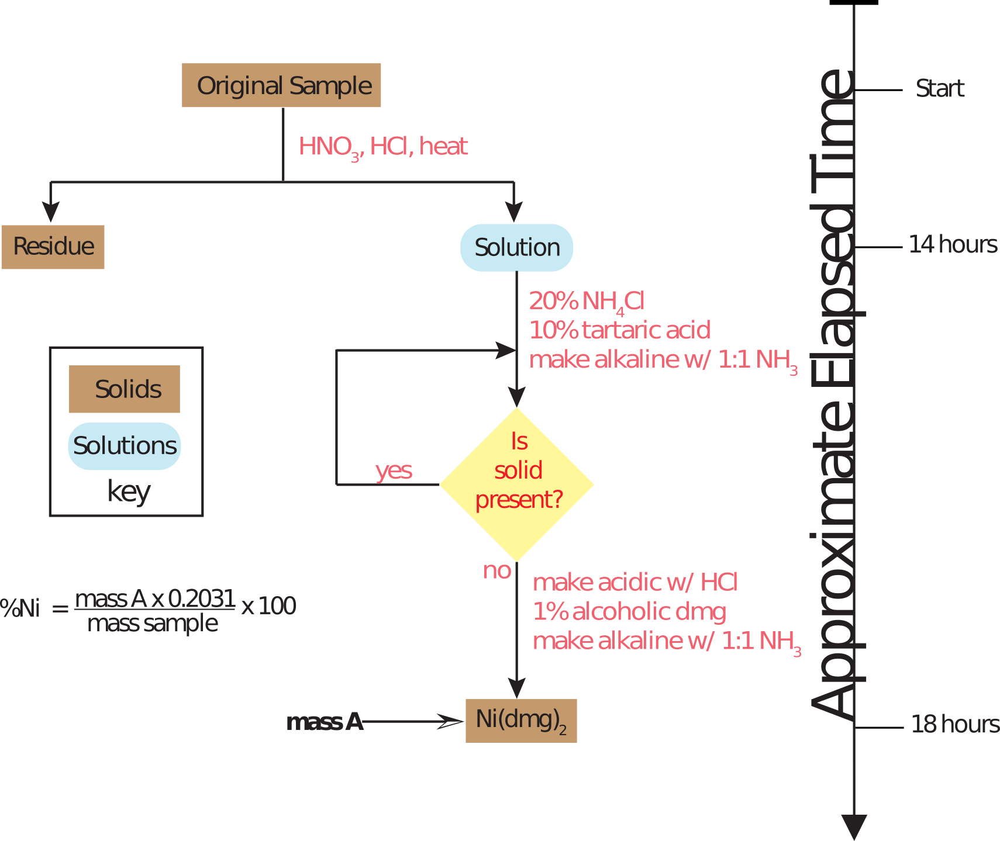
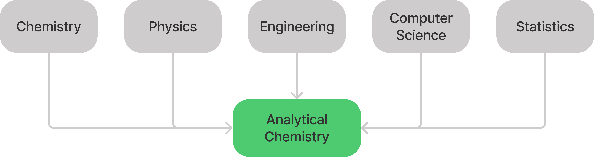
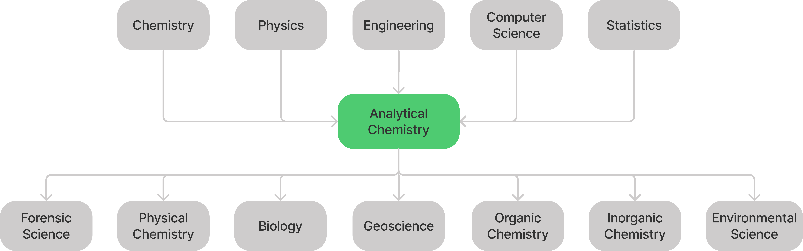

layout: true .footer[ - <div class="tooltip"><a href="/"><i class="fas fa-home"></i></a> <span class="tooltiptext">Go to C370 Main Page</span></div> - <div class="tooltip"><a href="/lecture/slides"><i class="fas fa-chalkboard-teacher"></i></a><span class="tooltiptext">Go to Lecture List</span></div> - <div class="tooltip"><i class="fas fa-question"></i><span class="tooltiptext">Press <kbd>Shift</Kbd> + <kbd>?</kbd> for Navigation Tips!</span></div> ] --- exclude: true <!-- <h2 style = "text-align: left; font-weight: bold; margin-left: 40px; font-size: 54px; margin-top: 10px;">Environmental applications of ultratrace spectroscopy</h2> --> <!-- <h2 style = "text-align: left; font-weight: bold; margin-left: 40px; font-size: 54px; margin-top: 10px;">Ultratrace Spectroscopy for Environmental Analysis</h2> --> <h2 style = "text-align: left; font-weight: bold; margin-left: 40px; font-size: 54px; margin-top: 50px;">An Analytical Perspective</h2> <!-- <h3 style = "text-align: left; font-weight: thin; margin-left: 40px; font-size: 48px;">Al Fischer, PhD</h3> --> <center> <img src="./img/chapter-1B/figure_1-3.png", style="height: 500px; margin-top: 10px;"> </center> --- <center> <iframe width="700" height="600" src="https://freakonomics.com/podcast/pima-harold-pollack/" frameborder="0"></iframe> </center> --- <center>  </center> ??? # Branches of Chemistry (5) 1. Organic 2. Inorganic 3. Physical 4. Analytical 5. Biochemistry What about in other branches??? Forensic? Environmental? Theoretical? One way to think about your courses is that each teaches you to think like that type of chemist...so you can communicate with us and bring in your own perspective to shape the field! --- # What is Analytical Chemistry? -- > Analytical chemistry is what analytical chemists do. > > *C.N. Reilly* ??? - Reilly was at UNC-CH - 1965 talk at ACS meeting. - but this is circular logic, right? what does it tell us? - What Reilly meant (my interpretation): Analytical chemistry is **ever evolving**, we should teach what the current research is regardless of textbook definitions. - My second interpretation: Analytical chemistry **broad** and does not fit a nice, neat definition. --- # What is Analytical Chemistry? > Analytical chemistry is [still] what analytical chemists do. > > -Royce Murray, 1994 <center> <img src="./img/chapter-1B/what-chemists-do.png", style="width: 300px;"> </center> ??? - 30 years later, Royce Murray (also UNC-CH), re-evaluated..."Analytical chemistry is *still* what analytical chemists do." - New things: computers, data processing, etc. --- # What is Analytical Chemistry? > Analytical chemistry is [[still]] [still] what analytical chemists do. > > -Al Fischer, 2021 ??? - Now, another 30 years later, the field still evolves - I have tried to incorporate some items (electronic notebooks, chemometrics) into the class. --- class: center At one time lab notebooks contained all data collected in lab, no matter what. <center>  </center> .image-credit[[Adloff](https://static.springer.com/sgw/documents/1426303/application/pdf/adloff_the+laboratory+notebooks+of+pierre+and+marie+curie.pdf) *Czechoslovak Jour. Phys.* (1999)] ??? - Many years ago, data and caluclations were simpler than today. --- class: center Overtime, instruments began recording data elsewhere (e.g. chart recorders). <center> <img src="https://upload.wikimedia.org/wikipedia/commons/8/85/Polygraaf.PNG", style="margin-top: 10px;"> </center> ??? Overtime things have become more complex. --- class: center Today, most data are digital, large, and complex. <center> <img src="https://media.springernature.com/full/springer-static/image/art%3A10.1038%2Fs41598-017-02499-1/MediaObjects/41598_2017_2499_Fig1_HTML.jpg?as=webp", style="margin-top: 100px;"> </center> .image-credit[[Fujimura et al](https://www.nature.com/articles/s41598-017-02499-1) *Sci. Rep.* (2017)] ??? We will use Julia + Pluto and perform chemometric analysis in this course. --- # So, what is analytical chemistry? ??? - We should find a definition that is general, and fits for both **classical** techniques and **modern** instrumental methods. - Here is one: > **Analytical chemistry** is the field concerned with qualitatively and quantitatively characterizing matter. - This captures the outcome of analytical chemistry, but this misses the *motivation* of the work. --- class: center # Is all chemistry 'analytical'? No. -- Venn diagram. --- # What is Analytical Chemistry? > To an analytical chemist **the process of making a useful measurement is critical**; if the measurement is not of central importance to the work, then it is *not* analytical chemistry. > > *David Harvey, Analtical Chemistry 2.1* --- # Example: Nickel Mine <center> <img src="https://upload.wikimedia.org/wikipedia/commons/a/a2/Nickel_Rim_South_mine.JPG"> </center> .image-credit[[P199](https://commons.wikimedia.org/wiki/File:Nickel_Rim_South_mine.JPG) / [CC BY-SA 3.0](https://creativecommons.org/licenses/by-sa/3.0/at/deed.en)] --- <center>  </center> .image-credit[David Harvey / [Analytical Chemistry 2.1](https://chem.libretexts.org/Bookshelves/Analytical_Chemistry/Book%3A_Analytical_Chemistry_2.1_%28Harvey%29) / [CC BY-SA 4.0](https://creativecommons.org/licenses/by-sa/3.0/at/deed.en)] --- <center>  </center> .image-credit[David Harvey / [Analytical Chemistry 2.1](https://chem.libretexts.org/Bookshelves/Analytical_Chemistry/Book%3A_Analytical_Chemistry_2.1_%28Harvey%29) / [CC BY-SA 4.0](https://creativecommons.org/licenses/by-sa/3.0/at/deed.en)] --- <center> <img src="https://www.wcu.edu/WebGraphics/CHPH_inst_flame-aa.jpg", style="width: 450px; margin-top: 50px;"> </center> --- # So, now again, what is analytical chemistry? > To an analytical chemist, the process of making a useful measurement is critical; if the measurement is not of central importance to the work, then it is not analytical chemistry. > > *David Harvey*, Analtyical Chemistry 2.1 ??? > **Analtyical chemistry** is the field concerned with creating and improving methods to qualitatively and qualitatively characterize matter. - we can also get a sense from *Analytical Chemistry* journal scope. > Topics that commonly include chemical reactions and selectivity, **chemometrics and data processing**, electrochemistry, **elemental and molecular characterization**, imaging, **instrumentation**, **mass spectrometry**, microscale and nanoscale systems, -omics, sensing, **separations**, **spectroscopy**, and surface analysis. ***Papers dealing with established analytical methods need to offer a significantly improved original application of the method.*** > > [Journal Scope](https://doi.org/10.1021/acs.analchem.5b02231), *Analytical Chemistry* --- # Types of Analytical Chemistry - **Characterization Analysis** - **Fundamental Analysis** ??? - Characterization Analysis (determination of structure, size, mass, etc.) sample specific -- Inst. I (this course) - Fundamental Analysis (method development to better understand theoretical framework and a method's limitations) not sample specific (Inst II) --- # Analytical Chemsitry: An Interdisciplinary Field <center>  </center> --- # Analytical Chemsitry: An Interdisciplinary Field <center>  </center> --- <center> <img src="./img/chapter-1B/figure_1-3.png", style="margin-top: 10px;"> </center> --- # Summary Analytical chemists work at the ***extremes of analysis***. > To an analytical chemist, the process of making a useful measurement is critical; if the measurement is not of central importance to the work, then it is not analytical chemistry. > > We will come across numerous examples of analytical methods...most of which are routine examples of chemical analysis. > > It is important to remember, however, that non-routine problems prompted analytical chemists to develop these methods. > > *David Harvey*, Analytical Chemistry 2.1 --- # Seven Stages of an Analytical Method 1. **Conception** of analytical method (birth) 2. Successful **demonstration** that the analytical method works 3. **Establishment** of the analytical method’s capabilities 4. Widespread **acceptance** of the analytical method 5. **Continued development** of the analytical method leads to significant improvements 6. New **cycle** through steps 3-5 7. Analytical method can no longer compete with newer methods (**death**). Steps 1–3 and 5 are the province of analytical chemistry; step 4 is the realm of chemical analysis. .image-caption[The seven stages of an analytical method listed here are modified from Fassel, V. A. Fresenius’ Z. Anal. Chem. 1986, 324, 511–518 and Hieftje, G. M. J. Chem. Educ. 2000, 77, 577–583.] --- # Flame AA Watch *A Long Shot that Paid Off* about the development of flame atomic absorption spectroscopy. <center> <iframe width="560" height="315" src="https://www.youtube.com/embed/dYVb56Qmlak" title="YouTube video player" frameborder="0" allow="accelerometer; autoplay; clipboard-write; encrypted-media; gyroscope; picture-in-picture" allowfullscreen></iframe> </center> <!-- =============================================================================== -->